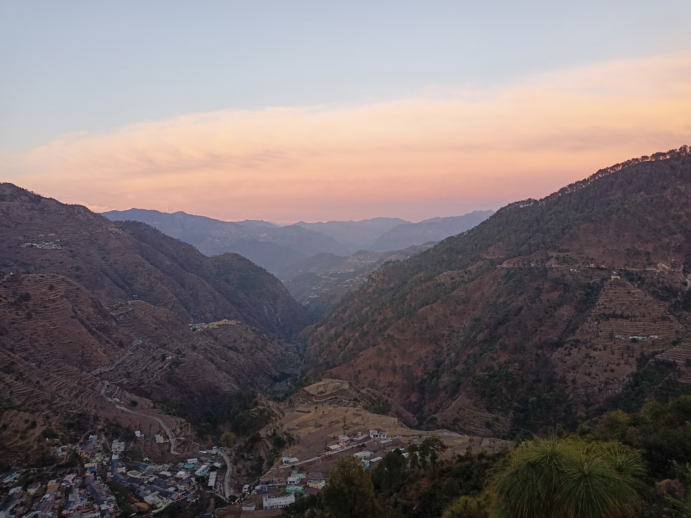

Wanna know more about the village??
We got you covered
A Resilient community is one in which the inhabitants' practice
harmonious interdependence, employ ecologically
sustainable means and blend native knowledge systems with
contemporary appropriate technology to achieve self-reliance
in terms of the basic needs:
With a very scenic setting surrounded by rivers and mountains,
Kanatal provides a perfect getaway for explorers wanting to experience
the untouched beauty of the mountains.
Explore breathtaking views and scenery of a village situated in Uttrakhand.
When it comes to Uttrakhand,tourists attraction is a plus point here
most of the people visits mussoorie,tehri,nainital,bhimtal.
But there are indeed other places which are
less famous but are far better.
Bhamorikhal
surkanda devi
kanatal
lot others

According to the mythology, the origins of the Surkanda Devi
temple can be attributed to Goddess Sati, wife of Lord Shiva who
immolated herself in her father Daksha’s sacrifice when he embarrassed
Shiva by not inviting the couple to the Yajna.
Enraged by the death of Sati,
Shiva wandered all over the region and performed tandava
(dance of cosmic destruction).
Feared, the heaven Gods requested
Lord Vishnu to stop Shiva. Lord Vishnu uses his discus Sudarshana to
destroy the corpse of Sati and pieces of her body fell all over the region,
which are known as shaktipeeths